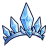
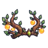
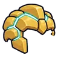
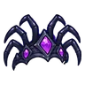

กาเรธ คำสาบานที่แตก
มอนธาตุศักดิ์สิทธิ์ Lv 68–68 · บอสเนื้อเรื่อง
เจอที่
| แมพ | โซน | Lv | ภูมิภาค |
|---|---|---|---|
| ผาหินแดง | 68–68 | แดนใต้สีแดง |
ค่าสถานะตามเลเวล
| Lv | HP | ATK | DEF | MDEF | EXP | Job |
|---|---|---|---|---|---|---|
| 68 | 777,450 | 193–289 | 33 | 22 | 1,954 | 1,466 |
ตีด้วยธาตุไหนดี
แรงขึ้น: มืด ×1.25
เบาลง: น้ำ ×0.75 ดิน ×0.75 ไฟ ×0.75 ลม ×0.75 พิษ ×0.75 วิญญาณ ×0.75 ศักดิ์สิทธิ์ ×0
วัตถุดิบที่ดรอป
—
อุปกรณ์ที่ดรอป (5)
| ของ | โอกาส |
|---|---|
 มงกุฎราชินีหิมะ | 1% |
 มงกุฎราชาพงไพร | 1% |
 หมวกเกราะโกเลมทอง | 1% |
 มงกุฎนางพญาแมงมุม | 1% |
| 1% |